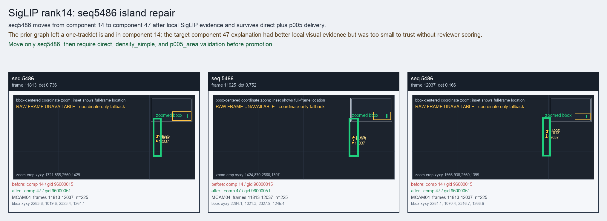

SigLIP rank14: seq5486 island repair
seq5486 moves from component 14 to component 47 after local SigLIP evidence and survives direct plus p005 delivery.
Before
component 14, gid 96000015, component_size 167
component 14, gid 96000015, component_size 167
After
component 47, gid 96000051, component_size 184, decision_status post_combo5_reviewer_combo_probe
component 47, gid 96000051, component_size 184, decision_status post_combo5_reviewer_combo_probe
Evidence
target_sim=0.5905, target_margin=0.0931, source_rest_margin=0.6696
Raw frame
unavailable_coordinate_fallback
target_sim=0.5905, target_margin=0.0931, source_rest_margin=0.6696
Raw frame
unavailable_coordinate_fallback
Failure and fix
Old failure: The prior graph left a one-tracklet island in component 14; the target component 47 explanation had better local visual evidence but was too small to trust without reviewer scoring.
New implementation: Move only seq5486, then require direct, density_simple, and p005_area validation before promotion.
BBox evidence

Moved tracklets
| seq | video | gid | component | frames | dets |
|---|---|---|---|---|---|
| 5486 | vlincs_MS01_MC0001_MCAM04_2024-03-Tc6 | 96000015 -> 96000051 | 14 -> 47 | 11813-12037 | 225 |